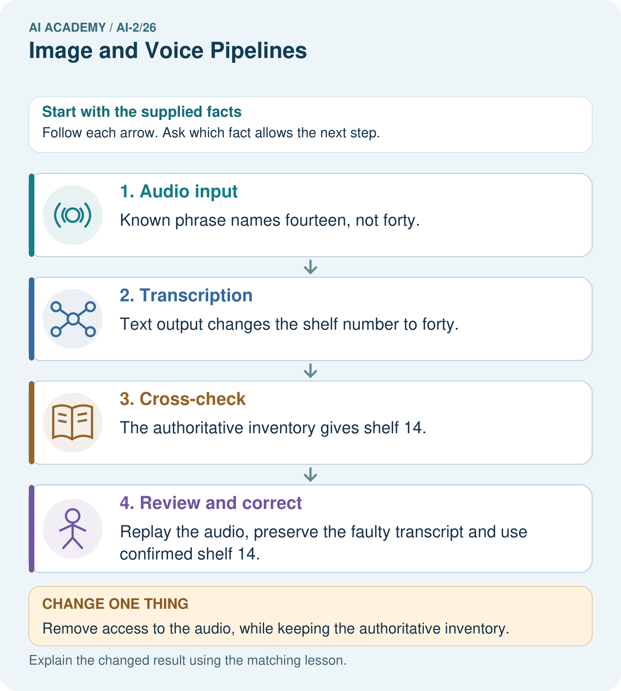

AI Academy · Level 2 · Grade 7 · Week 26 · Teacher guide
Image and Voice Pipelines
Learn to understand, design, build, test and explain AI systems responsibly.
Project: Transparent Book Recommender
Teacher guide · 1 of 8
Image and Voice Pipelines
Teach the learning cycle
Primary target: Explain the mechanism and terminology of speech pipelines and multimodal evidence
| Session | Sequence and minutes | Resources |
|---|---|---|
| Session 1 · Understand · 45 min | 0–7: recall and prerequisite; 7–15: inspect the concrete case and predict; 15–30: teacher models the worked trace; 30–40: learners explain a step using the text and visual; 40–45: check the core idea. | Sections 1–6; record the brief recall in the workbook. |
| Session 2 · Practise · 45 min | 0–5: retrieve the procedure; 5–15: W2 completion practice; 15–23: explain and check with a partner; 23–30: each learner answers the misconception check; 30–40: targeted reteaching or a harder variation; 40–45: prepare the investigation. | Sections 7–10; use the matching workbook W2 and misconception check. |
| Session 3 · Investigate and transfer · 45 min | 0–5: retrieve the decision rule; 5–20: investigate or trace; 20–30: start the independent case; 30–38: connect the project; 38–43: act on feedback; 43–45: plan the return check. | Sections 9 and 11–14. Give extra time to finish the full task set; use Section 15 when the week includes a coding lab. |
This is a starting allocation of 135 minutes, not a validated duration. Preserve all named topics. Schedule extra time for connected examples, the full investigation, independent cases and project building. Repeated copies of a case share one recorded attempt; they are not new evidence.
Case exposure check: this source example appears in ai-2/26, ai-3/12, ai-3/13. Reuse a familiar case for recall or modelling; verify that the case used to assess transfer has not already received feedback.
Retrieval answer guidance
Text as Pieces
Without opening the old lesson, explain one key idea from Text as Pieces. Give an example and a mistake that the idea helps you avoid.
Look for: Encode and decode text under an explicit toy vocabulary
Reference example, not the only acceptable wording: Teacher explanation: The rule chooses the longest matching ordinary token; sat has length three and s length one. Vocabulary and matching are case sensitive and contain no uppercase C.
Recommendation Scores
Without opening the old lesson, explain one key idea from Recommendation Scores. Give an example and a mistake that the idea helps you avoid.
Look for: Compute a weighted score
Reference example, not the only acceptable wording: Score 8.
Repair Bias in Data
Without opening the old lesson, explain one key idea from Repair Bias in Data. Give an example and a mistake that the idea helps you avoid.
Look for: Identify selection and coverage bias
Reference example, not the only acceptable wording: Afternoon or evening visitors, and people unable to attend in the morning.
Use the student module and workbook section with this exact week title. The worked case, independent question and answers below form one aligned lesson sequence.
What the learner must demonstrate
A voice request says 'under 90 pages'. The transcript says 'under 19 pages'; filtering correctly finds no books. Identify the first failing stage and a useful confirmation step.
Concept to explain
Perception systems transform signals through multiple fallible stages.
| Term | Meaning |
|---|---|
| signal | A measurable quantity carrying information, such as changing sound pressure or light intensity. |
| pipeline | A connected sequence of stages in which one stage's output becomes another's input. |
| recognition | Interpreting an input as a known category or pattern rather than merely recording its signal. |
| stage error | A failure introduced at a particular step of a pipeline. |
Prepare the class
Use the supplied scenario, student illustrations and blank paper. For numeric work, offer counters or a calculator after learners show the setup. Fictional records are supplied; personal data and paid accounts are unnecessary.
Allow 80 minutes: recall 8; explanation 12; worked demonstration 15; guided practice 20; independent assessment 15; project and reflection 10. Extend the lab into a second session when needed.
Preparation for the connected explanation
Two 45-minute sessions. A multimodal pipeline may transcribe speech, inspect an image and generate a response. Errors at one stage can propagate even when later stages run correctly. Use the supplied constructed scenarios to make the mechanism inspectable. Collect W4 before sharing solutions. Students should name intermediate evidence and limitations; classroom pacing and learning effectiveness remain unvalidated.
Readiness answer
A result depends on the inputs, procedure and conditions that produced it. Preserve data roles and distinguish observed outcomes from predictions or unmeasured conditions. If the prior concept cannot be explained, use a short retrieval activity before this chapter.
Lesson and workbook; paper and pencil
Calculator and optional local Python 3 for arithmetic; no live API or private data
Prepare the fresh retry separately and withhold its solution until after collection
End goal for the pictorial case
By the end, I can trace where speech information changes and resolve a declared-authority conflict.
This added worked case illustrates the week’s main idea. Retain all original and connected topics; schedule its practice within the teaching cycle.
Teacher guide · 2 of 8
Explain the mechanism
Explain the mechanism
Input → Process → Output
Trace the information. At each stage, ask what changed and how you could test it.
Which stage could fail even when the other two are correct? Explain:
Predict first. Then check each step. A correct answer without visible reasoning is incomplete evidence.
1. Voice: sound → sampled signal → recognized words → intent → action.
2. Image: pixels → features → score → label.
3. Noisy sound can produce wrong words even if the intent stage works.
4. Diagnose the first wrong stage before changing later stages.
Recalculate, retrace, or restate the reasoning in your own representation:
CHECK Did the evidence answer the exact question? Did the total, path, or source record stay consistent?
Concrete teaching case
A voice book helper transcribes speech, extracts preference, then ranks books.
Where can a wrong suggestion begin?
Exact explanation to model
Transcription can mishear poetry and pass the wrong preference downstream. Check intermediate results.
Explain the added worked example
A multimodal pipeline may transcribe speech, inspect an image and generate a response. Errors at one stage can propagate even when later stages run correctly.
Begin by writing the question the procedure is intended to answer. Identify the information already supplied, the information it will produce and the information still missing. These are constructed classroom examples; they do not require live accounts, private records or an external service. Do not treat a plausible explanation as a measured outcome.
Track source modality, segment/time references, transcription, interpretation and final claims separately. Compare conflicting evidence without assuming one modality always wins. Ask for clarification when the task needs unresolved information.
Before applying the procedure, write its units, denominator or decision boundary where relevant. A partner should be able to repeat each step using the same inputs. If a required input is absent or violates the stated contract, record that condition explicitly instead of quietly replacing it with a convenient value.
Key terms
| Term | Meaning |
|---|---|
| Modality | A form of information such as audio, image or text |
| Transcription | A text representation of speech |
| Error propagation | An earlier error affecting later processing |
Model the reasoning aloud
Use the complete worked example below before asking learners to complete W2. Reveal a small part, invite a prediction, then explain the deciding step. These teacher notes contain solutions; do not reveal the independent case answer during modelling.
Audio transcript reads fifteen boxes; a clear written inventory says fifty boxes. The original audio is unavailable and the assistant reports fifteen as certain.
There is an unresolved quantity conflict and no audio replay. Preserve both sources and ask the responsible person; certainty is unsupported.
Compare the intermediate evidence with the final statement. Explain why each number or decision follows from the stated inputs. The conclusion belongs to this scenario and procedure; changing the inputs, evaluation population or authority can change what it establishes. Retain the raw record so a later revision can be compared honestly.
| Thinking move | Teacher prompt |
|---|---|
| Plan | What is given? What is the question? Which procedure fits these facts? |
| Do | Point to each input and intermediate step in the worked trace. Name the rule that allows the next step. |
| Check | Does the output answer the question? Which assumption or limitation prevents a larger claim? |
Use the diagram and verbal explanation together. Ask learners to match a sentence to a specific visual step; do not assign learners fixed visual or auditory learning styles.
A pictorial worked case: Image and Voice Pipelines
A fictional librarian dictates a shelf note that passes through transcription and catalogue lookup.
The facts we will use
Teacher-supplied ground truth audio phrase is “shelf fourteen”. Transcript says “shelf forty”.
A current signed inventory is declared authoritative and lists the requested book on shelf 14. The original audio recording remains available.

Read the picture one step at a time
Why this result follows
A correct later lookup cannot repair an earlier wrong input by magic. Locate the first difference between known audio and transcript, then compare the stated source authority. Keeping both records makes the correction auditable. A confident spoken answer for shelf 40 would remain wrong despite fluent synthesis.
What this example does not establish
Declared authority resolves this task’s source choice; it does not make every inventory entry universally accurate.
Change one thing in the pictured case
Change: Remove access to the audio, while keeping the authoritative inventory.
Prediction: Shelf 14 remains supported for the lookup, but transcription accuracy cannot be replay-checked.
Reason: The inventory resolves the shelf task; it does not recreate unavailable audio.
Ask while showing the picture
Cover the result. Ask learners to name the inputs and predict the next step. Uncover one step, connect the icon to the actual procedure, and explain its evidence. Then change the supplied condition and compare. The picture is a representation; it does not document execution of a real AI model.
Teacher guide · 3 of 8
Demonstrate and guide practice
Demonstrate and guide practice
Board sequence
Write the given facts: A voice book helper transcribes speech, extracts preference, then ranks books.
Write the question to explain: Where can a wrong suggestion begin?
Reveal after predictions: Transcription can mishear poetry and pass the wrong preference downstream. Check intermediate results.
Keep for an independent attempt: A voice helper hears find a book, converts speech to text, then searches. It writes find a cook. Which stage first failed and what should you inspect?
Classroom dialogue
Ask: Which facts are given, and which would we have to assume? Learners mark relevant details before discussing answers.
Say: Predict first. Show the rule, information path or calculation that would produce the result. A correct guess is not yet an explanation.
Reveal reasoning one step at a time. Explain why a tempting alternative fails. Write units and denominators for arithmetic, trace conditions for decisions, and identify supporting sources for claims.
In pairs, one learner solves while the other checks evidence; exchange roles. Remove the worked answer before independent assessment.
Model these guided questions
Guided: There is an unresolved quantity conflict and no audio replay. Preserve both sources and ask the responsible person; certainty is unsupported. Qualification: A stage-level accuracy or authority policy does not establish every modality agrees or every downstream claim is supported. Exit: accept a concrete variation with its predicted outcome and a stated condition that would challenge the mechanism; reject a claim resting on unmeasured evidence.
Case-specific teaching sequence
| Stage | Teacher action |
|---|---|
| Session 1: 0–7 minutes | Retrieve the prerequisite; identify the input, procedure and evidence source. |
| 7–18 minutes | Explain section 1 and vocabulary. Complete W1 with a mechanism-based explanation. |
| 18–32 minutes | Trace the declared procedure and worked case. Complete W2, recording intermediate steps. |
| 32–45 minutes | Discuss the diagram with the worked input; use W3 to distinguish measured claims and limitations. |
| Session 2: 0–8 minutes | Retrieve the worked reasoning and collect the guided response before discussing it. |
| 8–20 minutes | Compare a proposed boundary variant with the original case; identify what remains fixed. |
| 20–35 minutes | Collect W4 independently. Require the procedure trace and the bounded conclusion. |
| 35–45 minutes | Use W5 and exit responses for feedback. Administer the fresh retry after feedback and preserve both attempts. |
Reduce help deliberately
Completion task: Audio transcript reads fifteen boxes; a clear written inventory says fifty boxes. The original audio is unavailable and the assistant reports fifteen as certain. Show the intermediate steps and give the conclusion with its scope.
Teacher check: Teacher explanation: There is an unresolved quantity conflict and no audio replay. Preserve both sources and ask the responsible person; certainty is unsupported.
Start by identifying the given inputs together. Leave the intermediate steps blank. If needed, model one step, then withdraw that help on the next step. Move to a full trace only when the partial trace is understood. For partners, alternate explainer and checker; collect a response from every learner before discussion.
Individual reasoning check
Use the worked case for Speech pipelines and multimodal evidence. Proposed explanation: “The worked result establishes every future case”. Decide whether this explanation is supported. Point to the step or supplied fact that decides; explain your repair if needed.
Expected correction: A stage-level accuracy or authority policy does not establish every modality agrees or every downstream claim is supported.
Collect explanations, not only yes/no votes. If a misunderstanding is common, re-model the relevant step for the class. If it affects a few learners, give a short targeted group explanation while others solve a more demanding variation.
Pictorial practice question
Which stage first fails, and why should the faulty transcript not be silently overwritten?
Reasoned teacher answer
Transcription first fails. Preserve it to diagnose the confusion and distinguish correction from the original model output.
Changed-case reasoning: Shelf 14 remains supported for the lookup, but transcription accuracy cannot be replay-checked. The inventory resolves the shelf task; it does not recreate unavailable audio.
Collect each learner’s explanation before discussion. Use the first missing connection between input, deciding step and result to choose support. This question is worked-case practice, not fresh mastery evidence.
Teacher guide · 4 of 8
Run the weekly evidence lab
Run the weekly evidence lab
Words You Can Use to Reason
A definition matters when you can recognize the idea, use it, and contrast it with a near-miss.
Predict → Test → Record → Explain
Keep expected and actual results separate. Surprises are useful data when recorded honestly.
Trace four failures backward through stage cards. Change one stage input, predict downstream effects, and propose a stage-specific test.
What did the hardest test teach you that the normal test did not?
Make the lab runnable
Use the concrete case as the shared normal case and the independent question as a second case. Each pair creates a boundary or missing-information case and predicts its result before testing. Keep the expected result separate from an observed mistake.
| Record | What to capture |
|---|---|
| Input or evidence | Exact data, instruction or claim |
| Expected result | Answer or safe fallback declared before the run |
| Observed result | Actual result, including errors |
| Explanation | Rule, calculation or evidence explaining the outcome |
| Next test | One justified change and a new prediction |
Diagnose and reteach
For guessing, return to given facts and request a trace. For vocabulary without application, use one example and one non-example. For arithmetic errors, check the setup before the calculation. Finish with a different uncoached case before recording mastery.
Address these additional misconceptions
The worked result establishes every future case: A stage-level accuracy or authority policy does not establish every modality agrees or every downstream claim is supported.
A missing input may be replaced without recording the change: A replacement changes the evidence or contract. Record the change and its justification; do not silently turn unknown into a measured value.
Repeating an assessed case is new independent evidence: A replay checks consistency. An example used for feedback or revision cannot later be described as untouched final evaluation.
Match the support to the first error
| What the response shows | Next teaching action |
|---|---|
| Missing or misread facts | Read the case aloud, mark supplied versus unknown facts, and let the learner restate it. |
| Wrong procedure | Return to the deciding step in the worked case. Contrast it with the proposed incorrect explanation. |
| Arithmetic or implementation error | Trace intermediate values or lines; preserve the first mismatch and retry that step. |
| Correct result without a reason | Ask for a trace and a changed case before marking independent understanding. |
| An unsupported wider claim | Ask which supplied evidence supports the claim and which further observation would be needed. |
Offer an oral explanation, drawing, enlarged visual or fewer examples when that removes a reading/writing barrier. Keep the same reasoning goal. Stretch secure learners by changing a boundary or assumption and asking them to defend the effect, not simply by assigning more of the same questions.
Teacher guide · 5 of 8
Assess and explain the answers
Assess and explain the answers
Worked case answer
Transcription can mishear poetry and pass the wrong preference downstream. Check intermediate results.
Independent question
A voice helper hears find a book, converts speech to text, then searches. It writes find a cook. Which stage first failed and what should you inspect?
Expected independent answer
The speech-to-text stage first introduced the wrong word. Check recording clarity and transcription before blaming the search results.
What counts as evidence
| Criterion | 0 points | 1 point | 2 points |
|---|---|---|---|
| Result | Incorrect or absent | Partly correct | Correct with necessary conditions |
| Reasoning | No supporting trace | Some steps | Clear mechanism, calculation or source support |
| Limit | Overclaims certainty | Vague limitation | Relevant uncertainty or missing fact |
| Transfer | Copies without adapting | Adapts with prompts | Solves a changed case independently |
Use 6/8 as a classroom checkpoint, with 2 required for both Result and Reasoning. This is a proposed teaching rule, not a validated certification threshold. Do not count a coached answer as independent mastery; correct unsafe or unsupported claims regardless of total.
Feedback
Ask the learner to find the evidence that challenges this claim: “An incorrect final answer means every stage failed.” Keep the first attempt and an uncoached retry separate.
Original transfer answer
The transcription stage altered the number. Confirm 'under 90 pages' with the user or inspect the transcript before filtering. Fixing the ranking stage cannot restore a lost constraint; keep intermediate records for diagnosis without unnecessary personal recordings.
Explanations for the additional workbook examples
W1 Explain the mechanism
Explain the weekly mechanism in your own words. Use the worked scenario to name its input, decision rule and output.
Teacher explanation: A multimodal pipeline may transcribe speech, inspect an image and generate a response. Errors at one stage can propagate even when later stages run correctly. Track source modality, segment/time references, transcription, interpretation and final claims separately. Compare conflicting evidence without assuming one modality always wins. Ask for clarification when the task needs unresolved information.
W2 Trace the worked case
Audio transcript reads fifteen boxes; a clear written inventory says fifty boxes. The original audio is unavailable and the assistant reports fifteen as certain. Show the intermediate steps and give the conclusion with its scope.
Teacher explanation: There is an unresolved quantity conflict and no audio replay. Preserve both sources and ask the responsible person; certainty is unsupported.
W3 Audit the limit
A report omits this qualification: A stage-level accuracy or authority policy does not establish every modality agrees or every downstream claim is supported. Explain how omitting it could change a reader's interpretation, and write an accurate replacement.
Teacher explanation: A stage-level accuracy or authority policy does not establish every modality agrees or every downstream claim is supported. State the observed result separately from the unverified or out-of-scope claim; preserve the original evidence rather than inventing a missing fact.
W4 Apply a new case independently
Transcript says room E; a current written approval says room F. The task requires current approved room. Written approval is declared authoritative; trace the response and the transcription limit.
Teacher explanation: Report F from the authoritative approval, noting the transcript conflict if relevant. This resolves the task authority, not what the original speaker actually said.
W5 Design a revealing follow-up
For the worked scenario, propose one additional case that could reveal a failure, describe its expected outcome before running it, and explain what would need to remain fixed for a fair comparison. Do not reuse W4 as a new final test after receiving feedback.
Teacher explanation: Accept a concrete variant of the worked input or a missing/conflicting/boundary condition, with an expectation derived from the declared procedure. Require preserved settings, original outputs and data roles. A stage-level accuracy or authority policy does not establish every modality agrees or every downstream claim is supported. The new case should test this particular mechanism rather than merely restate the original result.
Assess independent transfer
Selected case: Transcript says room E; a current written approval says room F. The task requires current approved room. Written approval is declared authoritative; trace the response and the transcription limit.
Selected case answer
Teacher explanation: Report F from the authoritative approval, noting the transcript conflict if relevant. This resolves the task authority, not what the original speaker actually said.
| Dimension | Evidence required |
|---|---|
| Explanation | Names the applicable idea or procedure and ties it to the supplied facts. |
| Trace and result | Preserves the given inputs and shows the relevant intermediate steps; distinguishes a prediction from an observed execution. |
| Limits | States the assumptions, missing evidence or conditions under which the result would change. |
Record each dimension as not yet, with support, or independent. Accept a valid alternative procedure with a defensible trace. Do not penalise an honestly recorded model failure if the learner correctly explains its evidence and limits.
Feedback that the learner uses
Name the earliest unsupported step and give one action to repair it. Have the learner make that repair now and explain why. Then assess the relevant skill on a fresh, fully specified case. Confirm it was not previously practised with feedback; solve and check the new case before assigning it. A follow-up design prompt is a starting brief, not automatically an equivalent test.
Teacher guide · 6 of 8
Connect and extend learning
Connect and extend learning
Transparent Book Recommender
If voice or image input is added, show each transformation and a safe fallback.
Keep the decision, input, result, explanation and remaining limitation in the project evidence record. Retrieve this record next week rather than restarting the project.
Support and stretch
Trace one record or condition at a time with counters and labelled columns. Stretch: introduce a tie, boundary or missing field and declare its handling policy before rerunning.
Exit reflection
Ask for one decision the learner can now justify and one situation requiring more evidence or human review. Confidence ratings are separate from correct independent performance.
Bridge to the next week
Next: Week 27: Predictive vs Generative. Retrieve today’s evidence and identify what carries forward and what is new.
Support and fresh reassessment
Provide an input/procedure/result/limit frame and a calculator when needed. Ask students to identify the first step before completing the whole trace. Extension: compare two concrete variants of this mechanism while holding unrelated conditions fixed; report both successful and unsuccessful outcomes.
W4: Report F from the authoritative approval, noting the transcript conflict if relevant. This resolves the task authority, not what the original speaker actually said. Require intermediate reasoning and the stated scope. Fresh retry: Transcript says eight; a validated order record says eighteen and is declared authoritative for ordering. Expected reasoning: Use eighteen for the bounded order-record task; retain the transcript discrepancy and do not claim perfect transcription. If students need support, record it and reassess with another new case rather than awarding independence to a copied answer.
Next connection: Retrieval and indexing. Preserve the current case record and retrieve its evidence boundary before moving on.
Plan the delayed return
Suggested return points in this level: ai-2/27, ai-2/29, ai-2/32. Use actual classroom dates, adjusting for holidays and gaps. One, three and six teaching weeks are scheduling choices, not a claimed optimal spacing.
At a delayed check, ask for the idea from memory and a changed application. Compare with the earlier independent response and record support used. For a new level, revisit the previous capstone before checking the new prerequisites.
| Record | Teacher evidence |
|---|---|
| Learner code and date | |
| Concept and case used; prior exposure | |
| Explanation / trace / limits | |
| Support and first repair | |
| Changed case and delayed outcome | |
| Next teaching action |
Use the evidence to choose reteaching or the next step. A completed page, confidence rating or attractive project does not by itself demonstrate understanding.
Project evidence from this case
For voice-driven recommendations, confirm important recognised fields before searching or acting and retain source provenance.
Teacher guide · 7 of 8
Prepare, teach and assess
Teaching target: Explain the mechanism and terminology of speech pipelines and multimodal evidence
Prepare the labelled worked-case picture, the matching workbook, fictional input cards and a place for individual responses. No paid AI account is required for the paper reasoning activities.
| Session | Plan | Resources |
|---|---|---|
| Session 1 · Understand · 45 min | 0–7: recall and prerequisite; 7–15: inspect the concrete case and predict; 15–30: teacher models the worked trace; 30–40: learners explain a step using the text and visual; 40–45: check the core idea. | Sections 1–6; record the brief recall in the workbook. |
| Session 2 · Practise · 45 min | 0–5: retrieve the procedure; 5–15: W2 completion practice; 15–23: explain and check with a partner; 23–30: each learner answers the misconception check; 30–40: targeted reteaching or a harder variation; 40–45: prepare the investigation. | Sections 7–10; use the matching workbook W2 and misconception check. |
| Session 3 · Investigate and transfer · 45 min | 0–5: retrieve the decision rule; 5–20: investigate or trace; 20–30: start the independent case; 30–38: connect the project; 38–43: act on feedback; 43–45: plan the return check. | Sections 9 and 11–14. Give extra time to finish the full task set; use Section 15 when the week includes a coding lab. |
Before class, solve the supported practice: Audio transcript reads fifteen boxes; a clear written inventory says fifty boxes. The original audio is unavailable and the assistant reports fifteen as certain. Show the intermediate steps and give the conclusion with its scope.
Reasoned practice answer: Teacher explanation: There is an unresolved quantity conflict and no audio replay. Preserve both sources and ask the responsible person; certainty is unsupported.
Check every learner before discussion: Use the worked case for Speech pipelines and multimodal evidence. Proposed explanation: “The worked result establishes every future case”. Decide whether this explanation is supported. Point to the step or supplied fact that decides; explain your repair if needed.
Misconception repair: A stage-level accuracy or authority policy does not establish every modality agrees or every downstream claim is supported.
Support: read the exact case aloud, enlarge the labelled picture, supply input cards and model only the first deciding step. Accept a spoken explanation or drawing; retain the reasoning goal.
Extension: Remove access to the audio, while keeping the authoritative inventory. Require a prediction and a reason before comparing. Expected result: Shelf 14 remains supported for the lookup, but transcription accuracy cannot be replay-checked. Reason: The inventory resolves the shelf task; it does not recreate unavailable audio.
Independent assessment: withhold the reserved answer until the learner has attempted the new case. Record support separately from correctness.
| Criterion | Not yet | With support | Independent |
|---|---|---|---|
| Explanation | Names an answer without a deciding fact | Uses a hint to link fact and decision | Explains the deciding fact in own words |
| Trace or test | Cannot connect input and result | Completes steps with prompts | Traces or tests a changed case accurately |
| Limits and revision | Claims more than evidence supports | Names a limit after a prompt | States a defensible limit and useful next test |
Project checkpoint: Prepare the demonstration. Gather reproducible instructions, evidence, access checks and remaining limitations.
Use the weekly teacher answer for topic-specific reasoning. A saved progress tick is an activity record; judge mastery from the learner’s explanation and evidence.
Teacher guide · 8 of 8
Use feedback, labs and repair paths
Use the two formative questions as supported practice, not as independent mastery scores. Discuss the deciding evidence rather than accepting a guessed selection.
The feedback comes from the reviewed public worked case. Do not reveal the separately reserved independent teacher answer until the learner has attempted that case.
Ask students to predict before running code. Preserve errors and actual outputs; collect a changed test and an explanation. The branch-boundary and indexing lessons deliberately include failure cases.
Use the earlier worked-explanation links to address a specific missing building block, then return to the current question. Adapt this suggestion after observing the learner; it is not an automatic diagnosis.
Collect the completed-work portfolio as evidence. Record support separately from correctness, and assess explanation, trace/test and limitations. Progress ticks and quiz selections alone do not establish mastery.